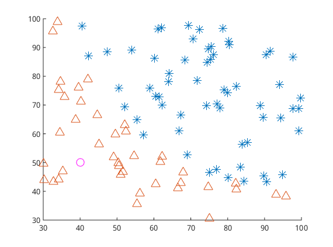

Logistic Regression
本文主要参考Andrew Ng老师的Machine Learning公开课，并用《机器学习实战》中的源码实现。
Logistic Regression基本原理
Logistic分布
Logistic Distribution的密度函数和概率分布函数如下：
\[\begin{equation} f(x)=F'(x) = \frac{e^{-(x-\mu)/\gamma}} { \gamma (1+e^{-(x-\mu)/\gamma})^2 } \end{equation}\]
\[\begin{equation} F(x) = P(X \leqslant x) = \frac{1}{1+e^{-(x-\mu)/\gamma}} \end{equation}\]
上式中$ \(是位置参数，\) > 0 $是形状参数。
下图是不同参数对logistic分布的影响，从图中可以看到可以看到 $ $ 影响的是中心对称点的位置，$ \(越小中心点附近增长的速度越快。而常常在深度学习中用到的非线性变换\) sigmoid \(函数是逻辑斯蒂分布的\) , $的特殊形式。

二项Logistic Regression模型

逻辑回归是为了解决分类问题，根据一些已知的训练集训练好模型，再对新的数据进行预测属于哪个类。对于上图中的数据，逻辑回归的目标是找到一个有足够好区分度的决策边界，从而能够将两类很好的分开。 >分离边界的维数与空间的维数相关。如果是二维平面，分离边界就是一条线（一维）。如果是三维空间，分离边界就是一个空间中的面（二维）。如果是一维直线，分离边界就是直线上的某一点。
假设输入的特征向量为$ x R^n \(，\) Y \(取值为\) 0，1 \(。对于二维的空间，决策边界可以表示为\) w_1x_1+w_2x_2+b=0 \(，假如存在一个例子使得\) h_w(x)=w_1x_1+w_2x_2+b>0 \(，那么可以判断它类别为\) 1 $，这个过程实际上是感知机，即只通过决策函数的符号来判断属于哪一类。
而逻辑回归需要再进一步，它要找到分类概率$ P(Y=1)\(与输入向量\) x \(的直接关系，然后通过比较概率值来判断类别，而刚好上文中的`logistic function`能满足这样的要求，它令决策函数的输出值\) w^Tx+b = log \(，求解这个式子得到了输入向量\) x $下导致产生两类的概率为：
\[\begin{equation} P(Y=1|x)=\frac{e^{w\cdot x+b}}{1+e^{w\cdot x+b}} \label{eq:logistic1} \end{equation}\]
\[\begin{equation} P(Y=0|x)=\frac{1}{1+e^{w\cdot x+b}} \end{equation}\]
其中$ w \(称为权重，\) b \(称为偏置，其中的\) w⋅x+b \(看成对\) x \(的线性函数，有时候为了书写方便，会将\) b \(写入\) w $，即 $ w=(b,w_1,…,w_n) $ ，并取$ x=(1,x_1,…,x_n) \(。然后对比上面两个概率值，概率值大的就是\) x $对应的类。
又已知一个事件发生的几率odds是指该事件发生与不发生的概率比值，二分类情况下即$
= \(。取`odds`的对数就是上面提到的`logistic
function`，\) logistic(P(Y=1|x))=log=w⋅x
$。从而可以得到一种对逻辑回归的定义，
输出$ Y=1 \(的对数几率是由输入\) x \(的线性函数表示的模型，即逻辑斯蒂回归模型(李航.《统计机器学习》)。**而直接考察公式\)\(\eqref{eq:logistic1}\)$可以得到另一种对逻辑回归的定义，线性函数的值越接近正无穷，概率值就越接近1；线性值越接近负无穷，概率值越接近0，这样的模型是逻辑斯蒂回归模型(李航.《统计机器学习》)。**因此逻辑回归的思路是，先拟合决策边界(这里的决策边界不局限于线性，还可以是多项式)，再建立这个边界与分类的概率联系，从而得到了二分类情况下的概率。
有了上面的分类概率，就可以建立似然函数，通过极大似然估计法来确定模型的参数。设$ P(Y=1|x)=h_w(x) \(，似然函数为\) {y{(i)}}[1-h_w(x^{(i)})]{(1-y{(i)})} $，对数似然函数为
\[\begin{eqnarray} L(w) & = & \sum\_{i=1}^{N}\log P(y^{(i)}|x^{(i)};w) \\\\ & = & \sum\_{i=1}^{N}[y^{(i)}\log h\_w(x^{(i)})+(1-y^{(i)})\log(1-h\_w(x^{(i)}))] \end{eqnarray}\]
优化方法
优化的主要目标是找到一个方向，参数朝这个方向移动之后使得似然函数的值能够减小，这个方向往往由一阶偏导或者二阶偏导各种组合求得。逻辑回归的损失函数是
\[\begin{eqnarray} min J(w) &=& \min \frac{1}{m} \sum_{j=1}^{m}Cost(h\_w(x^{(i)}),y^{(i)}) \\\\ &=& \min {-\frac{1}{m}[\sum_{i=1}^{m}y^{(i)}\log h\_w(x^{(i)})+(1-y^{(i)})\log(1-h\_w(x^{(i)}))]} \end{eqnarray}\]
梯度下降法
最大似然估计就是要求得使$ J(θ) \(取最大值时的\) θ \(，但因此处的\) Cost(h_w(x{(i)}),y{(i)}) \(添加了一个负号，所以必须用梯度下降法求解最佳参数。但若此处的\) Cost(h_w(x{(i)}),y{(i)}) $没有添加负号，则需要用梯度上升法求解最佳参数。
先把$ J(w) \(对\) w_j \(的一阶偏导求出来，且用\) g \(表示。\) g $是梯度向量。
\[\begin{eqnarray} g_j &=& \frac{\partial J(w)}{\partial w\_j}\\\\ &=& -\frac{1}{m}\sum_{i=1}^{m}(\frac{y^{(i)}}{h_w(x^{(i)})} h_w(x^{(i)}) (1-h\_w(x^{(i)}))(-x_{j}^{(i)}) + (1-y^{(i)})\frac {1}{1-h_w(x^{(i)})}h_w(x^{(i)})(1-h_w(x^{(i)}))x\_j^{(i)}) \\\\ &=& -\frac{1}{m}\sum_{i=1}^{m}(y^{(i)}-h\_w(x^{(i)}))x\_{j}^{(i)}) \end{eqnarray}\]
梯度下降是通过$ J(w) \(对\) w $的一阶导数来找下降方向（负梯度），并且以迭代的方式来更新参数，更新方式为
\[\begin{eqnarray} w^{k+1}_j &=& w^k_j+α(-g_j)\\\\ &=&w^k\_j+α \frac{1}{m}\sum\_{i=1}^{m}(y^{(i)}-h\_w(x^{(i)}))x\_{j}^{(i)} \label{eq:lr-gd} \end{eqnarray}\]
$ k \(为迭代次数。每次更新参数后，可以通过比较\)||J(w{k+1})−J(wk)||\(或者\) ||w{k+1}−wk ||\(与某个阈值\) $大小的方式来停止迭代，即比阈值小就停止。
如果采用梯度上升法来推到参数的更新方式，会发现式子与公式\(\eqref{eq:lr-gd}\)完全一样，所以采用梯度上升发和梯度下降法是一样的。
随机梯度下降法
从上面梯度下降法中的公式\(\eqref{eq:lr-gd}\)中可以看到，每次更新回归系数时都需要遍历整个数据集，如果有数十亿样本和成千上万个特征，则梯度下降法的计算复杂度就太高了。随机梯度下降法一次仅用一个样本点来更新回归系数：
\[\begin{equation} w^{k+1}_j = w^k\_j+α (y^{(i)}-h\_w(x^{(i)}))x\_{j}^{(i)} \end{equation}\]
梯度下降过程向量化
约定训练数据的矩阵形式如下，$ x $的每一行为一条训练样本，而每一列为不同的特称取值：
\[\begin{equation} x= \left[ \begin{matrix} x^{(1)}\\\\ x^{(2)}\\\\ \ldots\\\\ x^{(m)} \end{matrix} \right] = \left[ \begin{matrix} x_0^{(1)} & x_1^{(1)} & \ldots & x_n^{(1)}\\\\ x_0^{(2)} & x_1^{(2)} & \ldots & x_n^{(2)}\\\\ \ldots & \ldots & \ldots & \ldots \\\\ x_0^{(m)} & x_1^{(m)} & \ldots & x_n^{(m)} \end{matrix} \right] , y= \left[ \begin{matrix} y^{(1)}\\\\ y^{(2)}\\\\ \ldots\\\\ y^{(m)} \end{matrix} \right] \end{equation}\]
约定待求的参数θ的矩阵形式为：
\[\begin{equation} \theta = \left[ \begin{matrix} \theta_1\\\\ \theta_2\\\\ \ldots\\\\ \theta_n \end{matrix} \right] \end{equation}\]
先求$ x \(并记为\) A $：
\[\begin{equation} A=x \cdot \theta = \left[ \begin{matrix} x_0^{(1)} & x_1^{(1)} & \ldots & x_n^{(1)}\\\\ x_0^{(2)} & x_1^{(2)} & \ldots & x_n^{(2)}\\\\ \ldots & \ldots & \ldots & \ldots \\\\ x_0^{(m)} & x_1^{(m)} & \ldots & x_n^{(m)} \end{matrix} \right] \cdot \left[ \begin{matrix} \theta_0\\\\ \theta_1\\\\ \ldots\\\\ \theta_n \end{matrix} \right] = \left[ \begin{matrix} \theta_0x_0^{(1)} + \theta_1x_1^{(1)} + \ldots + \theta_nx_n^{(1)}\\\\ \theta_0x_0^{(2)} + \theta_1x_1^{(2)} + \ldots + \theta_nx_n^{(2)}\\\\ \ldots \\\\ \theta_0x_0^{(m)} + \theta_1x_1^{(m)} + \ldots + \theta_nx_n^{(m)} \end{matrix} \right] \end{equation}\]
求$ h_(x)-y \(并记为\) E $：
\[\begin{equation} E=h_\theta(x)-y= \left[ \begin{matrix} g(A^{(1)})-y^{(1)}\\\\ g(A^{(2)})-y^{(2)}\\\\ \ldots \\\\ g(A^{(m)})-y^{(m)} \end{matrix} \right] = \left[ \begin{matrix} e^{(1)}\\\\ e^{(2)}\\\\ \ldots\\\\ e^{(m)} \end{matrix} \right] =g(A)-y \end{equation}\]
由上式可知$ h_(x)-y \(可以由\) g(A)-y $一次计算求得。
再来看一下公式\(\eqref{eq:lr-gd}\)的\(\theta\)更新过程：
\[\begin{eqnarray} \theta_j &=& \theta\_j + \alpha \sum\_{i=1}^{m}(-e^{(i)})x\_j^{(i)}\\\\ &=& \theta\_j-\alpha\cdot(x\_j^{(1)},x\_j^{(2)},\ldots,x\_j^{(m)})\cdot E \end{eqnarray}\]
综合上面的式子有：
\[\begin{equation} \theta = \theta - \alpha\cdot\frac{1}{m}\cdot x^T\cdot(g(x\cdot\theta)-y) \end{equation}\]
正则化
由于模型的参数个数一般是由人为指定和调节的，所以正则化常常是用来限制模型参数值不要过大，也被称为惩罚项。一般是在目标函数(经验风险)中加上一个正则化项$ (w) $即
\[\begin{equation} J(w) = -\frac{1}{m}[\sum_{i=1}^{m}y_ilog h_w (x_i) + (1-y_i)log(1-h_w(x_i))] + \lambda \Phi(w) \label{eq:reg} \end{equation}\]
而这个正则化项一般会采用L1范数或者L2范数。其形式分别为$ (w)=||x||_1 \(和\) (w)=||x||_2 $。
首先针对L1范数$ (w)=|x| \(，当采用梯度下降方式来优化目标函数时，对目标函数进行求导，正则化项导致的梯度变化当\) w_j > 0 \(是取1，当\) w_j < 0 $时取-1.
从而导致的参数\(w_j\)减去了学习率与公式的乘积，因此当$ w_j > 0 \(的时候，\) w_j\(会减去一个正数，导致\) w_j \(减小，而当\) w_j < 0 \(的时候，\) w_j\(会减去一个负数，导致\) w_j\(又变大，因此这个正则项会导致参数\) w_j$取值趋近于0，也就是为什么L1正则能够使权重稀疏，这样参数值就受到控制会趋近于0。L1正则还被称为 Lasso regularization。
然后针对L2范数\(\phi(w) = \sum_{j=1}^{n}w_j^2\)，同样对它求导，得到梯度变化为\(\frac{\partial \Phi(w)}{\partial w_j} = 2w_j\)(一般会用\(\frac{\lambda}{2}\)来把这个系数2给消掉)。同样的更新之后使得$ w_j$的值不会变得特别大。在机器学习中也将L2正则称为weight decay，在回归问题中，关于L2正则的回归还被称为Ridge Regression岭回归。weight decay还有一个好处，它使得目标函数变为凸函数，梯度下降法和L-BFGS都能收敛到全局最优解。
需要注意的是，L1正则化会导致参数值变为0，但是L2却只会使得参数值减小，这是因为L1的导数是固定的，参数值每次的改变量是固定的，而L2会由于自己变小改变量也变小。而公式\(\eqref{eq:reg}\)中的\(\lambda\)也有着很重要的作用，它在权衡拟合能力和泛化能力对整个模型的影响，\(\lambda\)越大，对参数值惩罚越大，泛化能力越好。
《机器学习实战》代码
梯度上升法：
1 | def gradAscent(dataMatIn, classLabels): |
随机梯度下降法：
1 | def stocGradAscent0(dataMatrix, classLabels): |
问题
LR为什么使用最大似然函数作为损失函数，而不是用MSE？
选用MSE作为损失函数时，求导形式为\(\frac{\partial C}{\partial w}=(\hat{y} - y)\sigma'(z)x\)，这个梯度是和sigmoid导数有关的，当模型的输出接近0或者1时，\(\sigma'(z)\)就会非常小，造成梯度消失的问题。
参考文献
【机器学习笔记1】Logistic回归总结 【机器学习算法系列之二】浅析Logistic Regression 牛顿法与拟牛顿法学习笔记（一）牛顿法